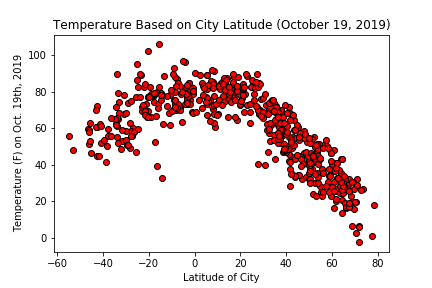

Temperature Based on Latitude

Temperature increased as latitude decreased because of the shape of the earth and its angle related to the sun. Temperatures were higher (and more variable) in the southern latitudes as compared to the northern latitudes. The southern hemisphere was experiencing summer, meaning the southern hemisphere is angled more towards the sun than the northern at this time of the year.